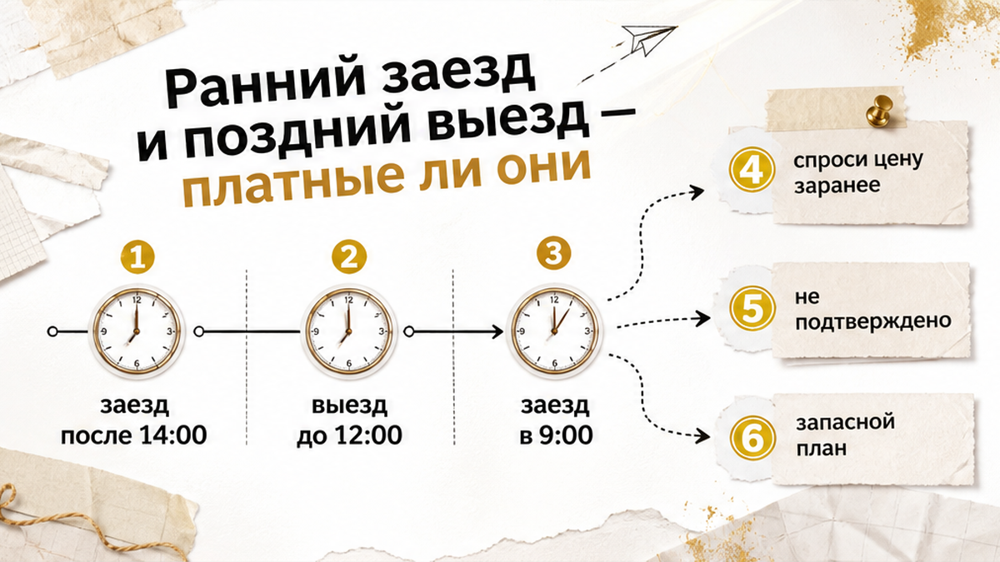
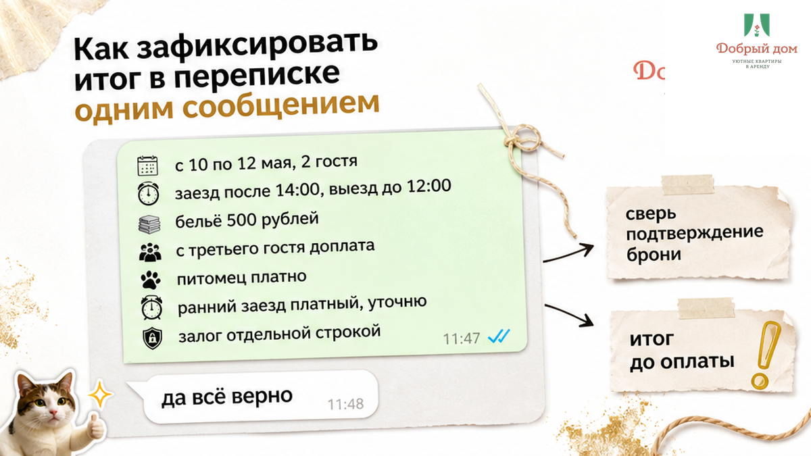

Цена за ночь и итог поездки — это не одно и то же. В переписке могут написать «всё включено», но пока вам не назвали общую сумму цифрой, это просто хорошие слова. А у вас бывало: выбрали квартиру по цене, а перед оплатой она вдруг стала дороже?
До любого перевода спросите не «сколько стоит ночь», а так: «Какая итоговая сумма за мои даты и за столько-то гостей?» Одна фраза — и половина неприятных сюрпризов отсеивается ещё до брони.
Сейчас покажем, как две ночи по 2500 ₽ могут превратиться в 6500 ₽. И дадим пять вопросов хозяину, которые закрывают почти всё.
Считаем просто. Две ночи по 2500 ₽ — это 5000 ₽. Именно эту красивую цифру обычно и замечают в объявлении.
А потом в переписке появляется уборка после выезда — 1500 ₽. Итого уже 6500 ₽. Это плюс 30% к стоимости ночей за строку, которую легко не заметить при сравнении вариантов.
Платная уборка сама по себе не обман. Это обычная практика: по рынку она бывает примерно от 500 до 2000 ₽. В тюменских карточках встречается и вариант «уборка по запросу — 500 ₽».
Подстава в другом. Вы сравнивали 2500 ₽ с 2800 ₽ у соседнего варианта, а сравнивать стоило 6500 ₽ с 5600 ₽. Квартира может выглядеть дороже за ночь, но оказаться выгоднее за всю поездку.
Смотрите не на цену ночи. Смотрите на итог поездки.
Это весь инструмент: пять сообщений, пара минут и ни одного перевода до ответа.
Если в ответ пишут: «Да, сейчас перечислю», — хороший знак. Если слышите «на месте разберёмся», то, кажется, главное вы уже поняли.
Полный список вопросов перед бронью мы собрали в нашем канале «Добрый дом». Там же разбираем формулировки, которые удобно отправить хозяину прямо в переписке.
С уборкой всегда по-разному. Где-то она уже сидит в цене ночи. Где-то это фиксированная сумма за весь заезд. Где-то написано: «по запросу».
Вот где ломается арифметика короткой поездки. За неделю 1500 ₽ уборки размазываются по дням и почти не ощущаются. А на две ночи те же 1500 ₽ дают треть сверху.
Поэтому одну или две ночи считайте особенно внимательно. Одна ночь плюс уборка нередко оказывается самой дорогой комбинацией.
А у вас что всплывало неожиданно: уборка, лишний гость, питомец? Напишите в комментариях — интересно, какая строка встречается чаще.
В конце августа мы посмотрели тюменские объявления посуточно. Это был срез одного дня, не статистика рынка, но в карточках регулярно попадалось следующее:
На доплате за третьего гостя обычно и начинаются споры. Одни говорят: квартира ведь одна, за что доплачивать? Другие напоминают про ещё один комплект белья, воду и уборку.
Мы смотрим на это так: доплата нормальна, когда о ней сказали до оплаты и вы согласились. Ненормально, когда о ней сообщают у двери, пока вы стоите с чемоданами.
Разница не всегда в сумме. Чаще она в моменте, когда эту сумму назвали.
Отдельно проговорите животное, парковку, праздничные даты и дополнительные комплекты белья. Это те самые строки, которые легко не увидеть сразу.

Обычный ориентир: заезд после 14:00, выезд до 12:00. Всё раньше или позже — это договорённость, а не то, что автоматически входит в проживание.
Поезд в шесть утра, самолёт в час дня, конференция с утра — и мысль «я просто оставлю вещи» вдруг превращается в доплату за часть суток.
Спросите прямо: «Заезд в 9:00 возможен? Если да, то за какую сумму?» Тут сразу два важных вопроса.
Ответ «возможно, если предыдущие гости выехали» — это ещё не подтверждение. Это «может быть». Лучше оставить себе запасной план, чем ждать у подъезда.
Здесь чаще всего и возникает путаница. Не потому что гости невнимательные — просто всё называют одним словом: «итого».
Когда эти четыре строки не смешиваются, итог уже не выглядит туманным. Понятно, что уйдёт хозяину, что сервису, что является предоплатой, а что относится к залогу.

Самая полезная привычка перед оплатой — собрать всё в одном сообщении. Можно так:
«Подтвердите, пожалуйста: за даты ___, ___ гостей итоговая сумма ___ ₽; включены ___; отдельно оплачиваются ___».
Дальше просто дождитесь ответа. Пока нет ясного «да, всё верно», деньги лучше не переводить.
Потом сверьте переписку с договором или подтверждением брони. Что входит и что оплачивается отдельно, должно совпадать. Если в подтверждении появилась новая строка, спросить лучше сейчас, а не в день заезда.
У нас в ПК «Добрый дом» это обычный порядок. До оплаты называем итог за весь срок: сколько стоит проживание, что включено и что идёт отдельной строкой.
Инструкцию к квартире гость получает до заселения, а не уже у подъезда. В деловой поездке или перед началом учебного года особенно не хочется выяснять условия на пороге.
Хотите посчитать свои даты — напишите нам в MAX: max.ru/id660300569233_biz. Можно и менеджеру в Telegram: @Dobriy_dom_Tyumen. Назовите даты и число гостей — вернём итог одной суммой.
Доплаты бывают, и не каждая из них плохая. Главное, чтобы вы узнали о них до перевода денег, а не у двери.
Для брони: +7 (993) 574-83-22. Квартиры и даты смотрите на добрыйдом-72.рф, а забронировать можно здесь: добрыйдом-72.рф/booking.